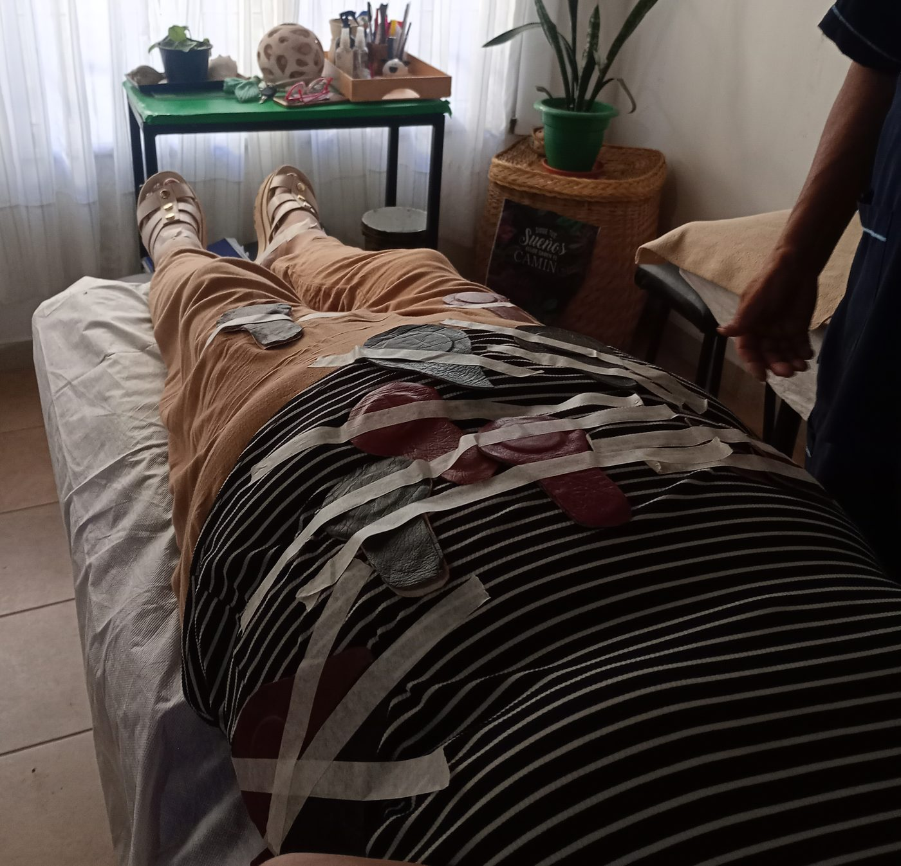
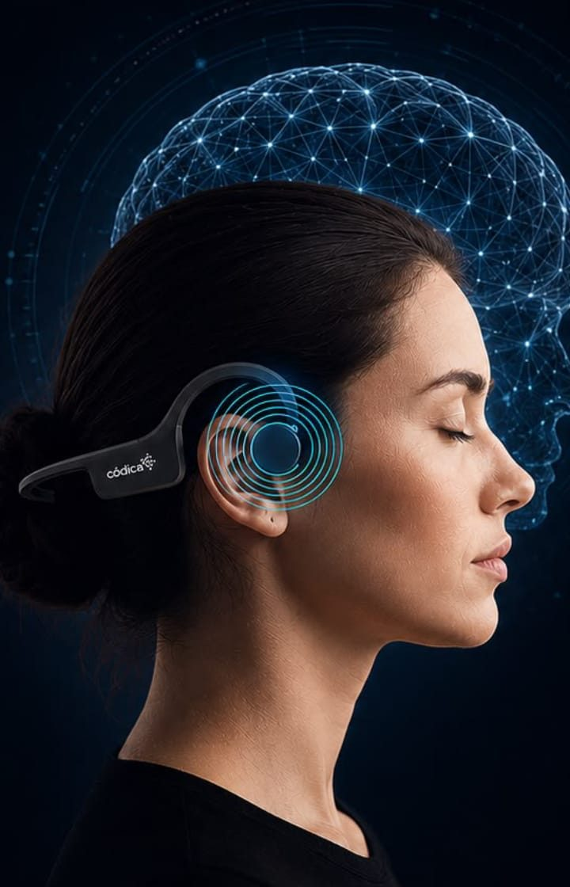
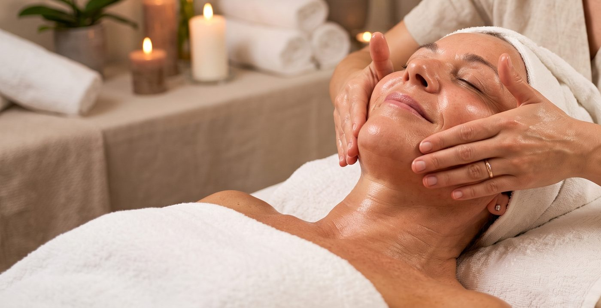
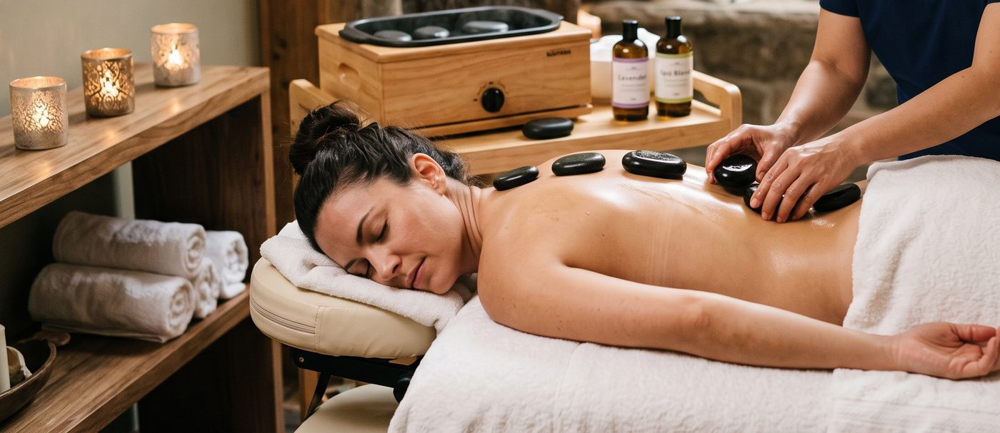
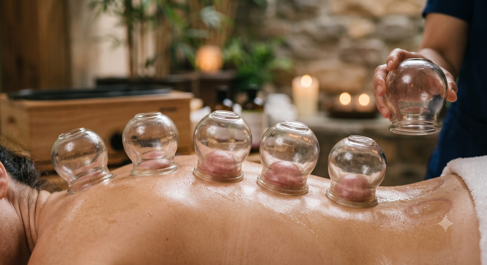

💻 Método Códica Online
Sesiones por videollamada (Zoom o Meet), con la misma profundidad que en el consultorio. Solo necesitás un lugar tranquilo, auriculares y conexión a internet.
Tu cuerpo sabe cómo equilibrarse, nosotros te acompañamos
🎵 Todas nuestras sesiones se acompañan con terapia de sonido, para una relajación más profunda
Dos caminos complementarios para acompañar tu equilibrio: uno a través del cuerpo, el otro a través de la mente y las emociones.

Aplicación de imanes en puntos específicos del cuerpo para acompañar el equilibrio natural del organismo. Una técnica complementaria, no invasiva y personalizada, que se suma a tu bienestar sin reemplazar ningún tratamiento médico.
¿No estás en Santa Rosa? También lo hacemos a distancia: coordinamos todo por WhatsApp.
Consultar por Biomagnetismo
Un método de acompañamiento que trabaja sobre los patrones de pensamiento que generan sufrimiento emocional, en sesiones guiadas que integran terapia de sonido. Para quienes eligen mirar hacia adentro y transformar su manera de vivir.
Disponible en el consultorio o por videollamada (Zoom o Meet), desde donde estés.
Consultar por Método Códica¿No estás en Santa Rosa? No hace falta. Podés hacer tu proceso de bienestar desde cualquier lugar del país, con la misma calidez y el mismo acompañamiento de siempre.
Sesiones por videollamada (Zoom o Meet), con la misma profundidad que en el consultorio. Solo necesitás un lugar tranquilo, auriculares y conexión a internet.
Una modalidad complementaria para acompañar tu equilibrio desde donde estés. Coordinamos todo por WhatsApp: día, horario y cómo prepararte para tu sesión.
Rituales de bienestar que acompañan tu proceso y regalan al cuerpo un descanso profundo.

Kobido, fangoterapia y biomagnetismo facial: un ritual que combina técnicas japonesas y naturales para revitalizar la piel y aflojar las tensiones del rostro.

El calor de las piedras volcánicas invita al cuerpo a soltar. Una experiencia de relajación muscular profunda y descanso reparador.

Técnica milenaria que acompaña la circulación y ayuda a aflojar tensiones acumuladas, para que el cuerpo recupere su liviandad.
Movimiento consciente y registro corporal: aprender a escuchar el cuerpo para habitarlo con más presencia y menos tensión.
Somos Silvina y Osmar, y creamos BioBalance para acompañar procesos de transformación y bienestar, con la mariposa monarca como símbolo: el cambio es posible, y nadie tiene que transitarlo solo.


Escribinos por WhatsApp y coordinamos tu turno, presencial en Santa Rosa u online desde donde estés. Estamos para acompañarte.
Escribir por WhatsApp